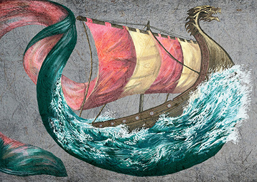
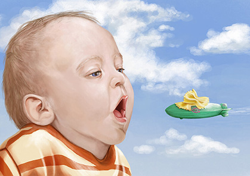
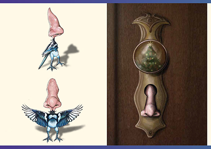

Introduzione
Ciao!
Quella che segue è una pagina di prova, realizzata come esercizio per il corso di Linguaggi
Multimediali (programmazione di base) .
Per renderla più credibile ho deciso di inserire come testo parte di una lettera motivazionale di
presentazione, come media alcune illustrazioni, animazioni e lavori da me realizzati nel corso dei miei
percorsi di studio.
Mi presento, sono Anna Cazzanelli amo da sempre disegnare e sogno di diventare illustratrice per
l'infanzia.
Ho conseguito il diploma di maturità presso il Liceo Artistico A.Vittoria di Trento indirizzo
arti figurative. I cinque anni di scuola mi hanno permesso di apprendere le basi teoriche e acquisire
le principali tecniche grafico pittoriche e di stampa.
Successivamente ho proseguito gli studi presso l Accademia di Belle Arti di Verona seguendo il corso
triennale di Nuove Tecnologie dell Arte. Durante questi tre anni ho potuto approfondire il mondo
dell arte digitale: fumetto, illustrazione, elaborazione digitale, sceneggiatura per videogiochi, video
editing, modellazione e animazione 3D. Inoltre, grazie ai numerosi progetti che ci venivano assegnati
settimanalmente in ogni disciplina,spesso da realizzare in gruppo, ho sviluppato ottime capacità di
problem solving e di collaborazione positiva in team.
A conclusione di questo percorso accademico ho deciso di realizzare i due elaborati per la tesi, quello
pratico e quello scrittografico, cercando di assecondare le mie ambizioni lavorative future nell’ambito
dell’illustrazione.
Per il progetto pratico ho pensato e realizzato in digitale il corredo iconografico del libro
"La martora
e il merlo" , pubblicato nel febbraio 2022 dalla casa editrice Robin Edizioni con la
quale avevo già
collaborato - nel 2019 - per la realizzazione della copertina del libro "Id e l uomo dei
ricordi".
Nel progetto di tesi teorico ho approfondito le mie conoscenze riguardanti il mondo dell illustrazione
ripercorrendo le principali tappe dell'evoluzione e della diversificazione iconografica degli animali
nelle favole classiche, analizzando, confrontando e commentando le scelte adottate da autori di
epoche e paesi differenti per rappresentare la favola di Esopo La volpe e la
cicogna.
Dopo la mia laurea ho trascorso un po' di tempo cercando di indagare e comprendere le mie potenzialità e
i miei limiti, migliorare le mie conoscenze teoriche e affinare le mie abilità tecniche
Ho ripreso così le tecniche tradizionali di base imparate al liceo e ho sperimentato nuovi metodi e
applicazioni; ho
approfondito i miei studi teorici sul mondo dell illustrazione per l infanzia; ho ideato un personaggio,
il Ficcanaso, e ho iniziato a pensare possibili scenari che lo vedono protagonista
Pubblicazioni
Id e l'uomo dei ricordi
Nel 2019 ho collaborato con la casa editrice Robin Edizioni per la realizzazione della copertina di questo libro
La martora e il merlo
Nel 2022 come progetto pratico di tesi ho realizzato il corredo iconografico di questo libro, pubblicato dalla Robin Edizioni nel febbraio dello stesso anno.
Illustrazioni
Ecco alcune delle illustrazioni che ho realizzato, alcune a mano altre in digitale


